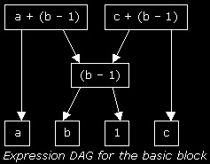

Implementing a Scripting Engine
by Jan Niestadt
This article originally appeared on Flipcode.
Part 6: Optimization
Did you Spot The Bug?
Noticed anything funny about the code of the last two parts? A memory leak maybe? Emmanuel Astier did; he found a bug in the symbol table: when deleting the symbol table, I only delete the first entry in the linked list, not the others... Okay, so the program doesn't crash, but it ain't pretty. This will be fixed in the next tutorial. Thanks Emmanuel!
Introduction
Well, my exams are done so I can finally continue the tutorial!
In this part I'll cover ways to optimize our intermediate code. Remember that we're using a very simple code generation algorithm so the code can probably be optimized quite a bit.
Because we're executing on a virtual machine, optimization becomes extra important: each of our instructions will take at least 20 CPU instructions to execute (it's very hard to get below that) so the fewer instructions, the better.
Note that I'll only be talking about machine-independent optimizations; machine-dependent optimization is a very different topic altogether, where you have to consider things like pipelining efficiency, register usage, etc. And of course, machine-dependent optimizations for your code are only needed if you actually run on hardware, which we won't. Of course there may be lots of ways to speed up execution of the virtual machine itself, but we'll see to that later.
Sorry, there's no example code for this part. Some of the optimization ideas are quite easy to implement, so you'll have no trouble with those. Others are more complex and require quite a lot of work to implement. I don't have the time to do this so I'll just give the general idea.
There are two important ways we can speed up our code. One way is to translate the code so it uses less instructions. Another is to make more powerful instructions.
Extra Opcodes
Higher-level instructions tend to be relatively fast to execute on a VM since the overhead from stack manipulation and instruction pointer updating is still (roughly) the same while we do more work. So we're going to forget RISC and go crazy with exotic instructions! ;-)
Let's look at some code. This is part of example.vasm, the compiled version of example.str:
1: OP_NOP
2: OP_PUSH strconst1
3: OP_GETTOP a
4: OP_DISCARD
5: OP_PUSH strconst2
6: OP_GETTOP b
7: OP_DISCARD
8: OP_PUSH a
9: OP_PUSH b
10: OP_CONCAT
11: OP_GETTOP s
12: OP_DISCARD
13: OP_PUSH s
14: OP_PRINT
I noticed a few things about this. First, at three places in the code there's an OP_DISCARD following an OP_GETTOP. We could speed this up by converting it to one OP_POP opcode that gets the top value and removes it from the stack. I could've done this in the first place, but I thought this was easier.
Second, I see OP_PUSH; OP_GETTOP; OP_DISCARD twice.. That's the code for simple assignments like "a = b;". We could provide a special opcode OP_COPY for this that copies the value of one variable to another.
Third, in the complete code for this program there are quite a few "double pushes": two pushes following each other. We could make a separate opcode OP_PUSH2 to speed this up.
You can probably think of other high-level instructions to add. For example, a OP_CONCATTO opcode to concatenate to an existing string (s += "foo";). If you pick these carefully they can really speed up execution, so take the time to study your assembly code and find optimization candidates.
Code Transformations
Another way of optimizing output code is to transform some part of the code to something that does the same thing faster. An example of this:
|
Source
|
Assembly
|
Optimized
|
s = a;
if (s == d) ...
|
OP_PUSH a
OP_GETTOP s
OP_DISCARD
OP_PUSH s
OP_PUSH d
OP_STR_EQUAL
...
|
OP_PUSH a
OP_GETTOP s
(cut away)
(cut away)
OP_PUSH d
OP_STR_EQUAL
...
|
Below are some established algorithms to tranform your code, saving instructions and thus time.
Most optimizations concentrate on optimizing little pieces of code known as "basic blocks". A basic block is has the following properties: you can only jump into it at the beginning and you can only jump out of it at the end. So there are no jumps or jump targets in the middle of the block. This means that within the block we can be sure of certain things about the value of our variables and can use this information to optimize the code. For example, if you could just jump to somewhere inside the block we could never be sure that, at that point, t still has the value (a * b - c).
Pointers make basic block optimizations a lot harder, since you have to be sure that a variable isn't modified through a pointer instead of through its name somewhere inside the basic block. Sometimes you just can't be sure about this (with pointer to pointers it's almost impossible to know what variable is changed) and you just have to skip an optimization step that may have been valid.
Algebraic identities
A simple way of optimizing code is to replace 'naive' calculations with faster versions that produce the same result. Note that these naive calculations are usually introduced by a simple code generation scheme rather than explicitly by the programmer. Have a look at the table, these are pretty obvious.
|
Before
|
After
|
x + 0
x * 1
x ** 2
2.0 * x
x / 2
|
x
x
x * x
x + x
x * 0.5
|
Common subexpression elimination
This optimization takes advantage of the fact that a certain expression may be used several times in a small piece of code:
a = a + (b - 1);
c = c + (b - 1);
Here, (b - 1) is a common subexpression and can be reused (the second (b - 1) expression can be 'eliminated')
t = b - 1; // store the subexpression in a temporary variable
a = a + t;
c = c + t;

For common subexpressions, you need to construct a directed acyclic graph (dag) of the expressions that occur inside your basic block. Every time you encounter a new expression (e.g. a higher node in the syntax tree), you check whether parts of it are already in the expression dag for this basic block, and add the expression, creating arrows pointing to its subexpressions. When the graph is done you can easily see what subexpressions are used multiple times, so you can store their value in a temporary variable and reuse it. See the picture for an example.
Loop optimizations
A well-known bit of Programmer Wisdom is "a program spends 90% of its execution time in 10% of the code", and although these percentages differ per program, everyone will agree most of the running time is spent in inner loops.
So if we can somehow optimize those loops, we can save a LOT of time.. Well, there are several ways of saving time in loops; I will briefly discuss two of them, code motion and induction variables.
Code motion is kind of like subexpression elimination, but instead of doing so inside a basic block, it calculates an expression before the loop begins (thus before the basic block) and uses this value throughout the loop:
while ( i <= limit-2 )
becomes
t = limit - 2;
while ( i <= t )
Loops may not have many constant expressions, though. What they often DO have is a loop counter, and this loop counter is used frequently for calculations like array indices, etc. That's where induction variables can help us.
If j is our loop counter, and j * 4 is calculated for every loop iteration, we can introduce an induction variable and replace this multiply by an add:
for (j = 0; j < n; j++) {
.... (j * 4) ....
}
becomes
t = 0;
for (j = 0; j < n; j++) {
.... t ....
t += 4;
}
Jump elimination
Sometimes you can eliminate a jump by looking at its target block. For example, when you have:
1: jmp 7
...
7: str_equal
8: jmpf 10
9: ...
you can copy code from the target block and save a jump (if the condition is false):
1a: str_equal // | copy of the target block
1b: jmpf 10 // |
1c: jmp 9 // if condition was true, goto 9
...
7: str_equal
8: jmpf 10
9: ...
It's up to you to decide how large parts of code you're willing to duplicate in order to eliminate one jump, but in inner loops it can save a lot of time
Coming Up Next..
Hopefully with this information, your programs can become a little more efficient. Compiler code optimization is a very complex area though, and we've covered only little bits of it. The Dragon book (see tut 1) covers a lot more of it, so check it out if you're interested.
Next time we'll create our virtual machine, and maybe generate our virtual machine code too. Then we can finally run a program.. So all our work hasn't been for nothing!
Next: The Virtual Machine
Prev: The Semantic Checker & Intermediate Code Generator